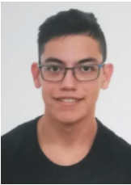

Jonathan David Signes

DATOS PERSONLES
- Fecha de nacimiento: 7 de septiembre del 2000
- Direccón: Rambla San Isidro, 4 - 46400 Cullera
- Teléfono: 623 29 43 66
- Email: jonimax11000@gmail.com
- Graduado del bachillerato científico en el instituto Blasco Ibáñez de Cullera.
- Actualmente estudiante delgrado de Ingeniería Multimedia en la Universidad de Valencia (Escuela Técnica Superior de Ingeniería - ETSE)
- Actualmente estudiante de la Formación Profesional Superior de Técnico en Desarrollo de Aplicaciones Multiplataforma en el intituta IES Jaume II el Just - (Tavernes)
- Título de socorrista acuático con 100 horas lectivas, celebrado en Valencia del 10 de febrero al 12 de marzo de 2017.
- Diploma de soporte vital básico y desfibrilación semiautomática (DESA) con 16 horas lectivas (8 presenciales), el 11 y 12 de marzo, Valencia. Expedido en Madrid, a 26 de marzo de 2017.
- Título de manipulador de alimentos desde el 7 de junio del 2016.
IDIOMAS
- Título de nivel A2 de inglés (2016). Escuela Oficial de Idiomas.
- Título de nivel A2 de francés (2016). Escuela Oficial de Idiomas.
- Estudiante de la variación de la Ingeniería Informática conocida como Ingeniería Multimedia.
- Estudiante del FP Superior de Técnico DAM.
- Usuario de nivel medio de office y Google drive.
- Usuario de nivel medio de Unity.
- Usuario de nivel medio de Python.
- Usuario de nivel principiante de Blender.
- Usuario de nivel principiante de GIMP.
- Usuario de nivel medio de GITHub.
- Usuario de nivel medio de Linux/Ubuntu.
- Usuario de nivel principiante de VMWare Workstation Player.
- Usuario de nivel medio de Processing.
- Usuario de nivel medio de Dev-C++.
PROGRAMACIÓN
EXPERIENCIA LABORAL
- Tres meses trabajando de socorrista en la empresa Socorristas del Mediterráneo (SOCOMED), año 2017.
- Tres meses trabajando de socorrista en la empresa SPEPHOR, año 2019
- Tres meses trabajando de socorrista en la empresa Socorristas del Mediterráneo (SOCOMED), año 2022.
- Tres meses trabajando de socorrista en la empresa Socorristas del Mediterráneo (SOCOMED), año 2023.
- 260 horas de prácticas en el Instituto de Robótica y Tecnologías de la Comunicación y de la Información (IRTIC), año 2022-23.
- Tres meses trabajando de controlador de parquings municipales en el Ayuntamiento de Cullera, año 2024
OTROS DATOS DE INTERÉS
- Capacidad de trabajo en equipo, proactivo, responsable y con capacidad de resolución y organización.
- Con permiso de conducción de clase B desde 2018 y vehículo propio.
- Con permiso de conducción An y A1 desde 2016 y vehículo propio.